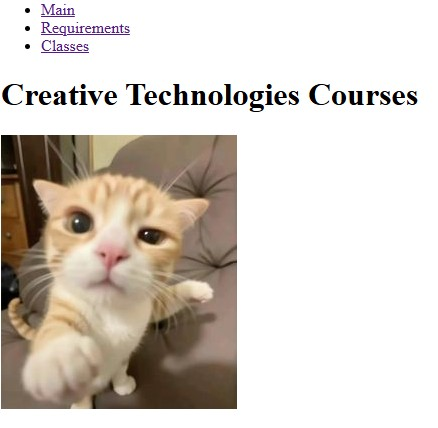
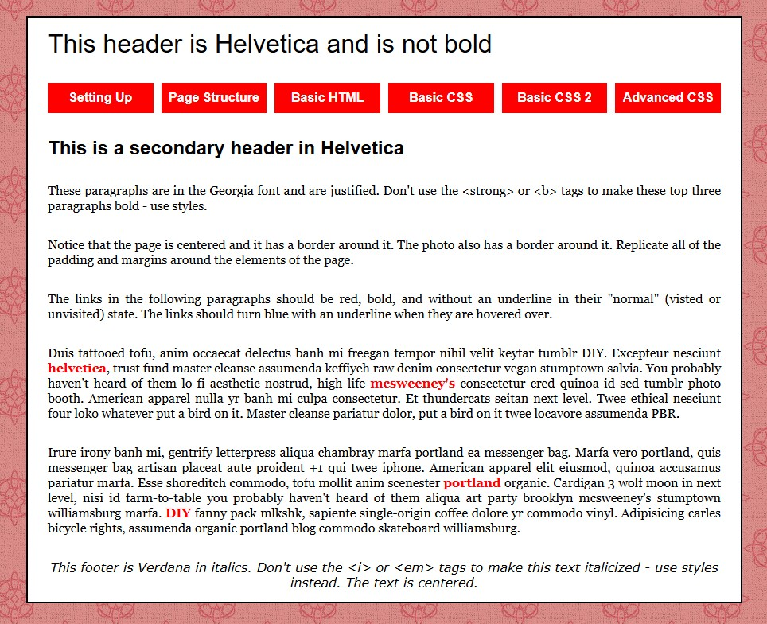
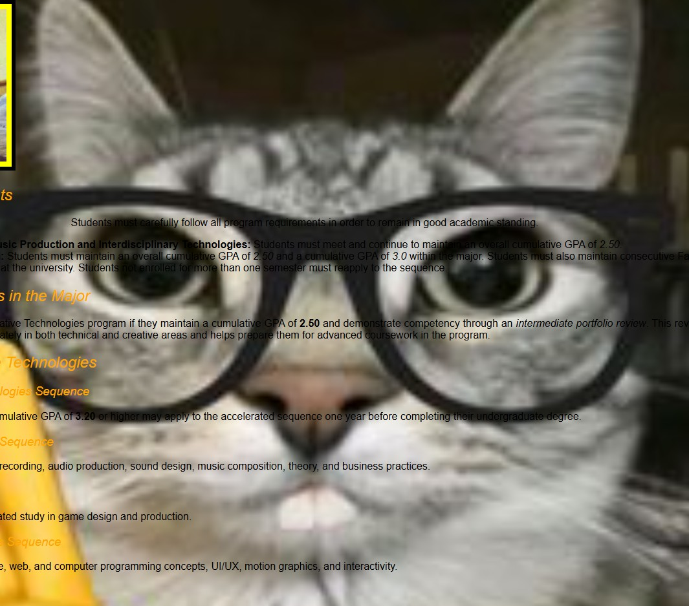

Website Project 1
In this assignment, I learned how to split one webpage into multiple pages and connect them using links. I also practiced organizing content and using images and headings correctly.

Website Project 2
In this assignment, I learned how to use grids and hover effects with CSS. It helped me understand layout better and how to make a website more interactive.

Website Project 3
This assignment helped me learn how to use CSS to style a website. I changed fonts, colors, and layouts, and saw how design makes a page look better.
